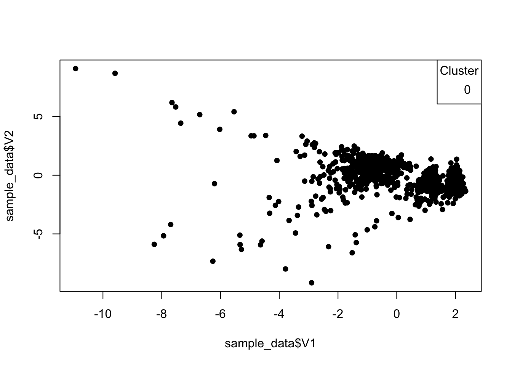

Unveiling the Unusual: Anomaly/Outlier Detection in R
In the vast landscape of data, anomalies often lurk in the shadows, hiding amongst the patterns and trends. These atypical data points, also known as outliers, can pose significant challenges in various domains, from financial fraud detection and medical diagnosis to cybersecurity and fault detection in machinery.
Anomaly detection, a fundamental technique in data science, empowers us to identify these anomalies and gain insights into the underlying causes of their unusual behavior. This blog post will embark on a journey into anomaly detection, exploring its applications and unveiling the secrets hidden within the data using R.
What are Anomalies?
Anomalies are data points that deviate significantly from the expected patterns and trends within the data set. They can be caused by various factors, including:
Measurement errors: Errors during data collection or recording can lead to anomalous data points.
Natural variability: Some data sets inherently exhibit high variability, leading to outliers that fall outside the typical range of values.
Fraudulent activity: In financial and other domains, anomalies can indicate fraudulent or malicious activity.
Unforeseen events: Unexpected events like natural disasters or equipment failures can also manifest as anomalies in data.
The Significance of Anomaly Detection:
Identifying and understanding anomalies offer numerous benefits across diverse fields:
Fraud detection: Identifying anomalies in financial transactions can help detect fraudulent activities like credit card fraud and insurance fraud.
Medical diagnosis: Recognizing anomalies in medical data, such as unusual test results or vital signs, can aid in early diagnosis of diseases and improve patient care.
Network security: Detecting anomalies in network traffic can help identify cyberattacks and protect sensitive information.
Fault detection: Identifying anomalies in sensor data from machinery can help predict equipment failures and prevent downtime and costly repairs.
Scientific discovery: Anomalies in scientific data can lead to new discoveries and breakthroughs in various research fields.
Exploring Anomaly Detection Techniques:
Several techniques exist for detecting anomalies in data, each with its own strengths and limitations. Some commonly used techniques include:
Distance-based methods: These methods measure the distance of each data point to the center of the data cluster and identify points that fall far from the cluster as anomalies.
Density-based methods: These methods identify regions of high density in the data and consider points located in low-density regions as anomalies.
Clustering algorithms: Clustering algorithms group data points into clusters based on their similarities and identify data points that do not belong to any cluster as anomalies.
Machine learning models: Machine learning models can be trained to classify data points as normal or anomalous based on specific features and patterns.
Anomaly Detection in Action: Identifying Unusual Spending Patterns
Let’s explore how anomaly detection can be applied in practice. Imagine a bank that wants to detect fraudulent credit card transactions. The bank has historical transaction data for each customer, including the amount spent, location, and time of the transaction.
By analyzing this data, the bank can identify unusual spending patterns that deviate from typical customer behavior. For example, a large transaction occurring in a foreign country at an unusual time might be flagged as an anomaly and investigated further.
Example: Detecting Anomalies in Bank Transactions using DBSCAN
In this example, we’ll demonstrate how to perform anomaly detection in credit card transactions using the Density-Based Spatial Clustering of Applications with Noise (DBSCAN) algorithm. We’ll utilize the Credit Card Fraud Detection dataset, publicly available here. Let’s walk through the code step by step.
library(dbscan)
Attaching package: 'dbscan'
The following object is masked from 'package:stats':
as.dendrogram
# Load the Credit Card Fraud Detection dataseturl <-"https://storage.googleapis.com/download.tensorflow.org/data/creditcard.csv"data <-read.csv(url)# Create a simplified dataset for demonstration purposes# In a real-world scenario, you'd use the entire datasetsample_data <- data[sample(nrow(data), 1000), ]# Perform anomaly detection using DBSCAN# Adjust parameters (eps and minPts) based on your datasetdbscan_result <-dbscan(sample_data[, 1:28], eps =0.5, minPts =5)# Visualize the anomaliesplot(sample_data$V1, sample_data$V2, col = dbscan_result$cluster +1, pch =16)legend("topright", legend =unique(dbscan_result$cluster), col =unique(dbscan_result$cluster), pch =16, title ="Cluster")

Explanation of the Code:
Load the DBSCAN library: We begin by loading the dbscan library, which provides the implementation of the DBSCAN algorithm.
Load the Credit Card Fraud Detection dataset: We use the provided URL to load the credit card transaction dataset. In a real-world scenario, you’d load the entire dataset.
Create a simplified dataset for demonstration: For illustration purposes, we create a smaller sample dataset (sample_data) from the loaded data.
Perform anomaly detection using DBSCAN: We apply the DBSCAN algorithm to the selected features of the dataset. Adjust the eps (radius of the neighborhood) and minPts (minimum number of points in the neighborhood) parameters based on the characteristics of your dataset.
Visualize the anomalies: Finally, we use a scatter plot to visualize the anomalies identified by DBSCAN. Each point is colored according to its assigned cluster, and the legend provides cluster information.
Visualization: Unveiling the Outliers
In our example using DBSCAN, the scatter plot below visually represents the anomalies detected in the credit card transactions. Each point is colored according to its assigned cluster, allowing for the easy identification of anomalous patterns. This visualization enhances our ability to interpret and act upon the detected anomalies, providing valuable insights for fraud detection and other applications.
Conclusion: Unlocking the Power of Anomaly Detection
Anomaly detection stands as a powerful tool for identifying unusual patterns and uncovering hidden insights within data. It empowers us to safeguard systems from malicious activities, ensure the quality of data, and gain deeper understanding of complex phenomena. As we continue to explore the vast realms of data science, anomaly detection will remain an essential technique for navigating the unexpected and unlocking the untold stories buried within data.
Beyond the Basics: Exploring Advanced Techniques
The code examples provided in this blog post serve as a starting point for exploring anomaly detection in R. For more complex scenarios, various advanced techniques and libraries are available:
Local outlier factor (LOF): Identifies anomalies based on the local density of data points.
Isolation Forest: Isolates anomalies by randomly partitioning the data and measuring their depth in the tree structure.
One-class Support Vector Machines (OC-SVM): Defines a hyperplane that maximizes the margin between the training data and the origin, effectively identifying data points that fall outside the margin as anomalies.
AnomalyDetection library: Provides various functions for outlier detection in R, including boxplot-based methods and distance-based algorithms.
By venturing deeper into the world of anomaly detection, you can enhance your skills in identifying the unexpected, unlocking valuable insights from data, and navigating the ever-evolving landscape of data science.
Source Code
---title: "Unveiling the Unusual: Anomaly/Outlier Detection in R"date: "2023-12-2"reading-time: "5 mins"categories: [ml, code, analysis]image: "anomaly.jpg"---In the vast landscape of data, anomalies often lurk in the shadows, hiding amongst the patterns and trends. These atypical data points, also known as outliers, can pose significant challenges in various domains, from financial fraud detection and medical diagnosis to cybersecurity and fault detection in machinery.Anomaly detection, a fundamental technique in data science, empowers us to identify these anomalies and gain insights into the underlying causes of their unusual behavior. This blog post will embark on a journey into anomaly detection, exploring its applications and unveiling the secrets hidden within the data using R.### **What are Anomalies?**Anomalies are data points that deviate significantly from the expected patterns and trends within the data set. They can be caused by various factors, including:- **Measurement errors:** Errors during data collection or recording can lead to anomalous data points.- **Natural variability:** Some data sets inherently exhibit high variability, leading to outliers that fall outside the typical range of values.- **Fraudulent activity:** In financial and other domains, anomalies can indicate fraudulent or malicious activity.- **Unforeseen events:** Unexpected events like natural disasters or equipment failures can also manifest as anomalies in data.### **The Significance of Anomaly Detection:**Identifying and understanding anomalies offer numerous benefits across diverse fields:- **Fraud detection:** Identifying anomalies in financial transactions can help detect fraudulent activities like credit card fraud and insurance fraud.- **Medical diagnosis:** Recognizing anomalies in medical data, such as unusual test results or vital signs, can aid in early diagnosis of diseases and improve patient care.- **Network security:** Detecting anomalies in network traffic can help identify cyberattacks and protect sensitive information.- **Fault detection:** Identifying anomalies in sensor data from machinery can help predict equipment failures and prevent downtime and costly repairs.- **Scientific discovery:** Anomalies in scientific data can lead to new discoveries and breakthroughs in various research fields.### **Exploring Anomaly Detection Techniques:**Several techniques exist for detecting anomalies in data, each with its own strengths and limitations. Some commonly used techniques include:- **Distance-based methods:** These methods measure the distance of each data point to the center of the data cluster and identify points that fall far from the cluster as anomalies.- **Density-based methods:** These methods identify regions of high density in the data and consider points located in low-density regions as anomalies.- **Clustering algorithms:** Clustering algorithms group data points into clusters based on their similarities and identify data points that do not belong to any cluster as anomalies.- **Machine learning models:** Machine learning models can be trained to classify data points as normal or anomalous based on specific features and patterns.### **Anomaly Detection in Action: Identifying Unusual Spending Patterns**Let's explore how anomaly detection can be applied in practice. Imagine a bank that wants to detect fraudulent credit card transactions. The bank has historical transaction data for each customer, including the amount spent, location, and time of the transaction.By analyzing this data, the bank can identify unusual spending patterns that deviate from typical customer behavior. For example, a large transaction occurring in a foreign country at an unusual time might be flagged as an anomaly and investigated further.#### **Example: Detecting Anomalies in Bank Transactions using DBSCAN**In this example, we'll demonstrate how to perform anomaly detection in credit card transactions using the Density-Based Spatial Clustering of Applications with Noise (DBSCAN) algorithm. We'll utilize the Credit Card Fraud Detection dataset, publicly available [here](https://storage.googleapis.com/download.tensorflow.org/data/creditcard.csv). Let's walk through the code step by step.```{r}library(dbscan)# Load the Credit Card Fraud Detection dataseturl <-"https://storage.googleapis.com/download.tensorflow.org/data/creditcard.csv"data <-read.csv(url)# Create a simplified dataset for demonstration purposes# In a real-world scenario, you'd use the entire datasetsample_data <- data[sample(nrow(data), 1000), ]# Perform anomaly detection using DBSCAN# Adjust parameters (eps and minPts) based on your datasetdbscan_result <-dbscan(sample_data[, 1:28], eps =0.5, minPts =5)# Visualize the anomaliesplot(sample_data$V1, sample_data$V2, col = dbscan_result$cluster +1, pch =16)legend("topright", legend =unique(dbscan_result$cluster), col =unique(dbscan_result$cluster), pch =16, title ="Cluster")```#### Explanation of the Code:1. **Load the DBSCAN library**: We begin by loading the **`dbscan`** library, which provides the implementation of the DBSCAN algorithm.2. **Load the Credit Card Fraud Detection dataset**: We use the provided URL to load the credit card transaction dataset. In a real-world scenario, you'd load the entire dataset.3. **Create a simplified dataset for demonstration**: For illustration purposes, we create a smaller sample dataset (**`sample_data`**) from the loaded data.4. **Perform anomaly detection using DBSCAN**: We apply the DBSCAN algorithm to the selected features of the dataset. Adjust the **`eps`** (radius of the neighborhood) and **`minPts`** (minimum number of points in the neighborhood) parameters based on the characteristics of your dataset.5. **Visualize the anomalies**: Finally, we use a scatter plot to visualize the anomalies identified by DBSCAN. Each point is colored according to its assigned cluster, and the legend provides cluster information.#### Visualization: Unveiling the OutliersIn our example using DBSCAN, the scatter plot below visually represents the anomalies detected in the credit card transactions. Each point is colored according to its assigned cluster, allowing for the easy identification of anomalous patterns. This visualization enhances our ability to interpret and act upon the detected anomalies, providing valuable insights for fraud detection and other applications.## Conclusion: Unlocking the Power of Anomaly DetectionAnomaly detection stands as a powerful tool for identifying unusual patterns and uncovering hidden insights within data. It empowers us to safeguard systems from malicious activities, ensure the quality of data, and gain deeper understanding of complex phenomena. As we continue to explore the vast realms of data science, anomaly detection will remain an essential technique for navigating the unexpected and unlocking the untold stories buried within data.### **Beyond the Basics: Exploring Advanced Techniques**The code examples provided in this blog post serve as a starting point for exploring anomaly detection in R. For more complex scenarios, various advanced techniques and libraries are available:- **Local outlier factor (LOF):** Identifies anomalies based on the local density of data points.- **Isolation Forest:** Isolates anomalies by randomly partitioning the data and measuring their depth in the tree structure.- **One-class Support Vector Machines (OC-SVM):** Defines a hyperplane that maximizes the margin between the training data and the origin, effectively identifying data points that fall outside the margin as anomalies.- **AnomalyDetection library:** Provides various functions for outlier detection in R, including boxplot-based methods and distance-based algorithms.By venturing deeper into the world of anomaly detection, you can enhance your skills in identifying the unexpected, unlocking valuable insights from data, and navigating the ever-evolving landscape of data science.